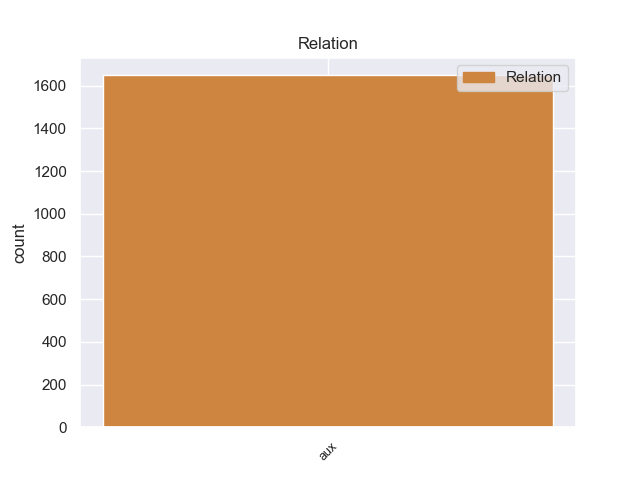
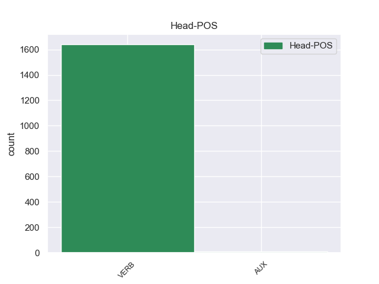
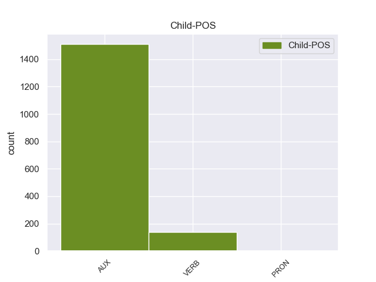

Distribution of features within this leaf



Agreement Rules sorted by frequency.
- When the dependent token is the auxiliary(aux) of the head token, and the dependent token is AUX.
1 Podía podía AUX _ Mood=Ind|Number=Sing|Person=3|Tense=Past|VerbForm=Fin 2 aux _ _
2 disparar disparar VERB _ Gender=Masc|Number=Sing|Tense=Past|VerbForm=Part 0 _ _ _
3 ocho _ _ _ _ 0 _ _ _
4 piezas _ _ _ _ 0 _ _ _
5 a _ _ _ _ 0 _ _ _
6 la _ _ _ _ 0 _ _ _
7 vez _ _ _ _ 0 _ _ _
8 en _ _ _ _ 0 _ _ _
9 andanada _ _ _ _ 0 _ _ _
10 lateral _ _ _ _ 0 _ _ _
11 y _ _ _ _ 0 _ _ _
12 seis _ _ _ _ 0 _ _ _
13 a _ _ _ _ 0 _ _ _
14 proa _ _ _ _ 0 _ _ _
15 en _ _ _ _ 0 _ _ _
16 vez _ _ _ _ 0 _ _ _
17 de _ _ _ _ 0 _ _ _
18 cuatro _ _ _ _ 0 _ _ _
19 a _ _ _ _ 0 _ _ _
20 banda _ _ _ _ 0 _ _ _
21 y _ _ _ _ 0 _ _ _
22 dos _ _ _ _ 0 _ _ _
23 en _ _ _ _ 0 _ _ _
24 caza _ _ _ _ 0 _ _ _
25 o _ _ _ _ 0 _ _ _
26 retirada _ _ _ _ 0 _ _ _
27 de _ _ _ _ 0 _ _ _
28 sus _ _ _ _ 0 _ _ _
29 predecesores _ _ _ _ 0 _ _ _
30 . _ _ _ _ 0 _ _ _
1 Una _ _ _ _ 0 _ _ _
2 vez _ _ _ _ 0 _ _ _
3 que _ _ _ _ 0 _ _ _
4 el _ _ _ _ 0 _ _ _
5 Hijo _ _ _ _ 0 _ _ _
6 de _ _ _ _ 0 _ _ _
7 Krypton _ _ _ _ 0 _ _ _
8 suelta suelta VERB _ Mood=Ind|Number=Sing|Person=3|Tense=Pres|VerbForm=Fin 0 _ _ _
9 el _ _ _ _ 0 _ _ _
10 misil _ _ _ _ 0 _ _ _
11 , _ _ _ _ 0 _ _ _
12 este _ _ _ _ 0 _ _ _
13 intenta intentar VERB _ Mood=Ind|Number=Sing|Person=3|Tense=Pres|VerbForm=Fin 8 aux _ _
14 huir _ _ _ _ 0 _ _ _
15 de _ _ _ _ 0 _ _ _
16 el _ _ _ _ 0 _ _ _
17 lugar _ _ _ _ 0 _ _ _
18 pero _ _ _ _ 0 _ _ _
19 es _ _ _ _ 0 _ _ _
20 atrapado _ _ _ _ 0 _ _ _
21 en _ _ _ _ 0 _ _ _
22 la _ _ _ _ 0 _ _ _
23 explosión _ _ _ _ 0 _ _ _
24 . _ _ _ _ 0 _ _ _
Disagree Examples:
1 He haber AUX _ Mood=Ind|Number=Sing|Person=1|Tense=Pres|VerbForm=Fin 2 aux _ _
2 estado estar VERB _ Gender=Masc|Number=Sing|Tense=Past|VerbForm=Part 0 _ _ _
3 una _ _ _ _ 0 _ _ _
4 vez _ _ _ _ 0 _ _ _
5 , _ _ _ _ 0 _ _ _
6 y _ _ _ _ 0 _ _ _
7 aunque _ _ _ _ 0 _ _ _
8 no _ _ _ _ 0 _ _ _
9 tengo _ _ _ _ 0 _ _ _
10 ninguna _ _ _ _ 0 _ _ _
11 queja _ _ _ _ 0 _ _ _
12 acerca _ _ _ _ 0 _ _ _
13 de _ _ _ _ 0 _ _ _
14 el _ _ _ _ 0 _ _ _
15 personal _ _ _ _ 0 _ _ _
16 y _ _ _ _ 0 _ _ _
17 de _ _ _ _ 0 _ _ _
18 el _ _ _ _ 0 _ _ _
19 servicio _ _ _ _ 0 _ _ _
20 , _ _ _ _ 0 _ _ _
21 me _ _ _ _ 0 _ _ _
22 resultó _ _ _ _ 0 _ _ _
23 decepcionante _ _ _ _ 0 _ _ _
24 pedir _ _ _ _ 0 _ _ _
25 una _ _ _ _ 0 _ _ _
26 pizza _ _ _ _ 0 _ _ _
27 , _ _ _ _ 0 _ _ _
28 concretamente _ _ _ _ 0 _ _ _
29 la _ _ _ _ 0 _ _ _
30 calzone _ _ _ _ 0 _ _ _
31 ( _ _ _ _ 0 _ _ _
32 forma _ _ _ _ 0 _ _ _
33 de _ _ _ _ 0 _ _ _
34 croissant _ _ _ _ 0 _ _ _
35 ) _ _ _ _ 0 _ _ _
36 y _ _ _ _ 0 _ _ _
37 me _ _ _ _ 0 _ _ _
38 encuentro _ _ _ _ 0 _ _ _
39 con _ _ _ _ 0 _ _ _
40 una _ _ _ _ 0 _ _ _
41 pizza _ _ _ _ 0 _ _ _
42 inflada _ _ _ _ 0 _ _ _
43 de _ _ _ _ 0 _ _ _
44 aire _ _ _ _ 0 _ _ _
45 y _ _ _ _ 0 _ _ _
46 hueca _ _ _ _ 0 _ _ _
47 . _ _ _ _ 0 _ _ _
1 Las _ _ _ _ 0 _ _ _
2 gorditas _ _ _ _ 0 _ _ _
3 son _ _ _ _ 0 _ _ _
4 en _ _ _ _ 0 _ _ _
5 realidad _ _ _ _ 0 _ _ _
6 tortillas _ _ _ _ 0 _ _ _
7 hechas _ _ _ _ 0 _ _ _
8 a _ _ _ _ 0 _ _ _
9 mano _ _ _ _ 0 _ _ _
10 , _ _ _ _ 0 _ _ _
11 en _ _ _ _ 0 _ _ _
12 las _ _ _ _ 0 _ _ _
13 cuales _ _ _ _ 0 _ _ _
14 antes _ _ _ _ 0 _ _ _
15 de _ _ _ _ 0 _ _ _
16 el _ _ _ _ 0 _ _ _
17 cocimiento _ _ _ _ 0 _ _ _
18 , _ _ _ _ 0 _ _ _
19 el _ _ _ _ 0 _ _ _
20 disco _ _ _ _ 0 _ _ _
21 de _ _ _ _ 0 _ _ _
22 masa _ _ _ _ 0 _ _ _
23 cruda _ _ _ _ 0 _ _ _
24 ha haber AUX _ Mood=Ind|Number=Sing|Person=3|Tense=Pres|VerbForm=Fin 26 aux _ _
25 sido _ _ _ _ 0 _ _ _
26 rellenado rellenar VERB _ Gender=Masc|Number=Sing|Tense=Past|VerbForm=Part 0 _ _ _
27 con _ _ _ _ 0 _ _ _
28 otro _ _ _ _ 0 _ _ _
29 ingrediente _ _ _ _ 0 _ _ _
30 ( _ _ _ _ 0 _ _ _
31 generalmente _ _ _ _ 0 _ _ _
32 , _ _ _ _ 0 _ _ _
33 chicharrón _ _ _ _ 0 _ _ _
34 prensado _ _ _ _ 0 _ _ _
35 o _ _ _ _ 0 _ _ _
36 queso _ _ _ _ 0 _ _ _
37 fresco _ _ _ _ 0 _ _ _
38 ) _ _ _ _ 0 _ _ _
39 ; _ _ _ _ 0 _ _ _
1 Cuando _ _ _ _ 0 _ _ _
2 se _ _ _ _ 0 _ _ _
3 haya haber AUX _ Mood=Sub|Number=Sing|Person=3|Tense=Pres|VerbForm=Fin 4 aux _ _
4 establecido establecer VERB _ Gender=Masc|Number=Sing|Tense=Past|VerbForm=Part 0 _ _ _
5 el _ _ _ _ 0 _ _ _
6 primer _ _ _ _ 0 _ _ _
7 contacto _ _ _ _ 0 _ _ _
8 internacional _ _ _ _ 0 _ _ _
9 por _ _ _ _ 0 _ _ _
10 la _ _ _ _ 0 _ _ _
11 prensa _ _ _ _ 0 _ _ _
12 y _ _ _ _ 0 _ _ _
13 la _ _ _ _ 0 _ _ _
14 correspondencia _ _ _ _ 0 _ _ _
15 , _ _ _ _ 0 _ _ _
16 procederemos _ _ _ _ 0 _ _ _
17 a _ _ _ _ 0 _ _ _
18 la _ _ _ _ 0 _ _ _
19 organización _ _ _ _ 0 _ _ _
20 de _ _ _ _ 0 _ _ _
21 modestos _ _ _ _ 0 _ _ _
22 congresos _ _ _ _ 0 _ _ _
23 locales _ _ _ _ 0 _ _ _
24 y _ _ _ _ 0 _ _ _
25 nacionales _ _ _ _ 0 _ _ _
26 . _ _ _ _ 0 _ _ _
1 Asimismo _ _ _ _ 0 _ _ _
2 , _ _ _ _ 0 _ _ _
3 Freeman _ _ _ _ 0 _ _ _
4 Dyson _ _ _ _ 0 _ _ _
5 ha haber AUX _ Mood=Ind|Number=Sing|Person=3|Tense=Pres|VerbForm=Fin 6 aux _ _
6 argumentado argumentar VERB _ Gender=Masc|Number=Sing|Tense=Past|VerbForm=Part 0 _ _ _
7 que _ _ _ _ 0 _ _ _
8 en _ _ _ _ 0 _ _ _
9 un _ _ _ _ 0 _ _ _
10 universo _ _ _ _ 0 _ _ _
11 en _ _ _ _ 0 _ _ _
12 contracción _ _ _ _ 0 _ _ _
13 la _ _ _ _ 0 _ _ _
14 temperatura _ _ _ _ 0 _ _ _
15 aumentaría _ _ _ _ 0 _ _ _
16 tanto _ _ _ _ 0 _ _ _
17 y _ _ _ _ 0 _ _ _
18 con _ _ _ _ 0 _ _ _
19 tal _ _ _ _ 0 _ _ _
20 rapidez _ _ _ _ 0 _ _ _
21 que _ _ _ _ 0 _ _ _
22 tal _ _ _ _ 0 _ _ _
23 ser _ _ _ _ 0 _ _ _
24 sería _ _ _ _ 0 _ _ _
25 incapaz _ _ _ _ 0 _ _ _
26 de _ _ _ _ 0 _ _ _
27 deshacer _ _ _ _ 0 _ _ _
28 se _ _ _ _ 0 _ _ _
29 de _ _ _ _ 0 _ _ _
30 el _ _ _ _ 0 _ _ _
31 calor _ _ _ _ 0 _ _ _
32 desprendido _ _ _ _ 0 _ _ _
33 por _ _ _ _ 0 _ _ _
34 sus _ _ _ _ 0 _ _ _
35 procesos _ _ _ _ 0 _ _ _
36 metabólicos _ _ _ _ 0 _ _ _
37 , _ _ _ _ 0 _ _ _
38 con _ _ _ _ 0 _ _ _
39 el _ _ _ _ 0 _ _ _
40 resultado _ _ _ _ 0 _ _ _
41 de _ _ _ _ 0 _ _ _
42 que _ _ _ _ 0 _ _ _
43 dichos _ _ _ _ 0 _ _ _
44 procesos _ _ _ _ 0 _ _ _
45 se _ _ _ _ 0 _ _ _
46 detendrían _ _ _ _ 0 _ _ _
47 y _ _ _ _ 0 _ _ _
48 el _ _ _ _ 0 _ _ _
49 ser _ _ _ _ 0 _ _ _
50 acabaría _ _ _ _ 0 _ _ _
51 por _ _ _ _ 0 _ _ _
52 morir _ _ _ _ 0 _ _ _
53 . _ _ _ _ 0 _ _ _
1 Se _ _ _ _ 0 _ _ _
2 han haber AUX _ Mood=Ind|Number=Plur|Person=3|Tense=Pres|VerbForm=Fin 3 aux _ _
3 encontrado encontrar VERB _ Gender=Masc|Number=Sing|Tense=Past|VerbForm=Part 0 _ _ _
4 altares _ _ _ _ 0 _ _ _
5 dedicados _ _ _ _ 0 _ _ _
6 a _ _ _ _ 0 _ _ _
7 ella _ _ _ _ 0 _ _ _
8 en _ _ _ _ 0 _ _ _
9 Gran _ _ _ _ 0 _ _ _
10 Bretaña _ _ _ _ 0 _ _ _
11 y _ _ _ _ 0 _ _ _
12 el _ _ _ _ 0 _ _ _
13 Norte _ _ _ _ 0 _ _ _
14 de _ _ _ _ 0 _ _ _
15 África _ _ _ _ 0 _ _ _
16 . _ _ _ _ 0 _ _ _